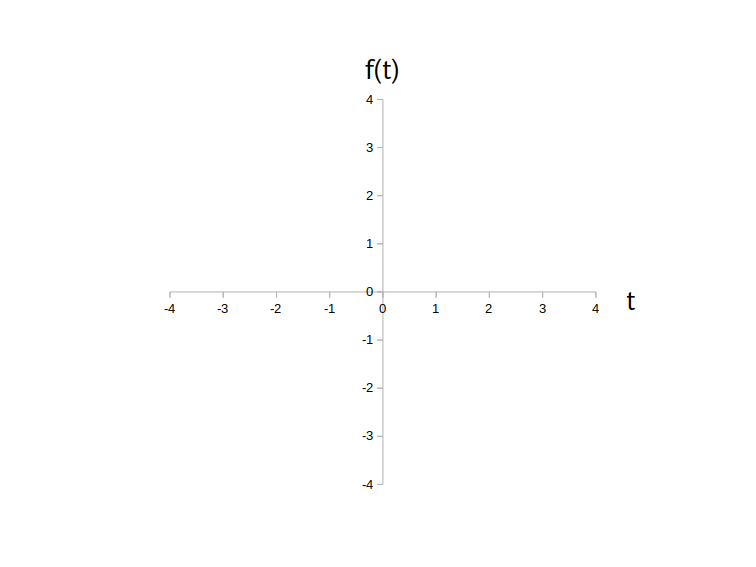
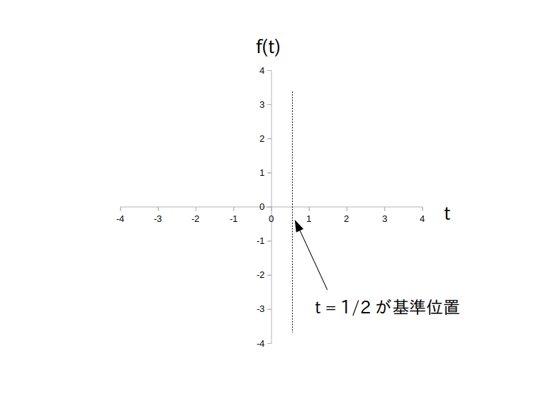
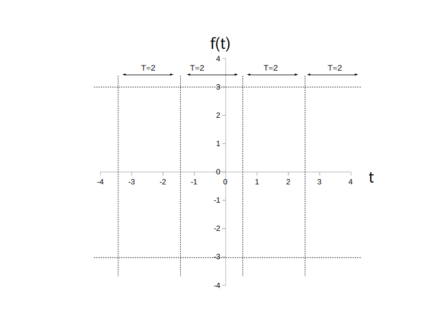
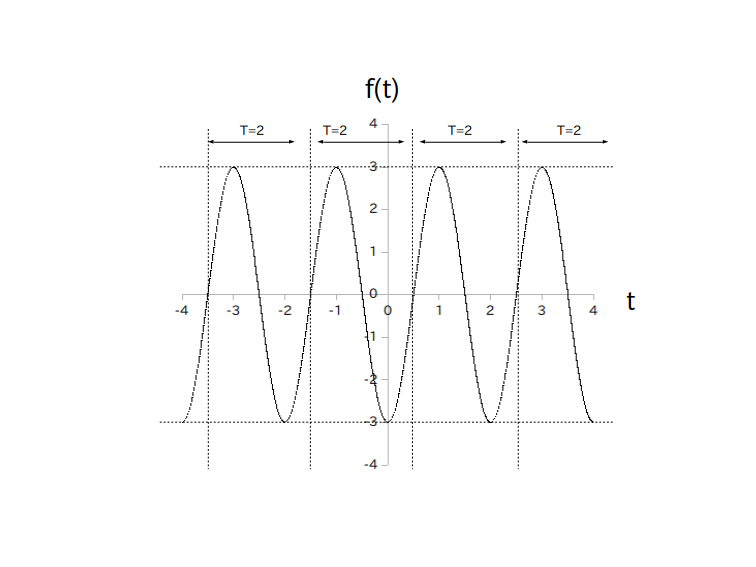

時間領域アナログサイン波は一般的なアナログ時間領域信号と違って代表点を選ばなくても簡単に描けます。
今回は例として
を描いてみます。
初めに横軸を引き、横軸の右に $t$ と記入します。
更に横軸の下に $t$ の値を適当な間隔で入れていきます。
今回の例では定義域を $-4 \leq t \leq 4$とし、間隔 $1$ で秒数を入れました。
次に縦軸を引きます。
$t=0$ の所で横軸とクロスさせて下さい。
そこが原点になります。
そのあと縦軸の上に $f(t)$ と記入します。
なお $f(t)$ の値域はサイン波の振幅 $a$ で決まり、具体的には
\[ -a \leq f(t) \leq a \]
の範囲となります。
今回の例では $a = 3$ ですので $-3 \leq f(t) \leq 3$ が値域になります。
よって少し余裕を持って -4 から 4 まで間隔 1 で数字を入れていきます。
この時点で以下の図1の状態になります。

次に初期位相 $\phi$ [rad] をもとにしてサイン波がアップダウンを開始する基準位置を求めます。
まず周期 $\textrm{T}$ [秒]を求めます。
今回は $w=\pi$ [rad/秒]ですので、公式より周期は $\textrm{T} = 2$ [秒] になります。
次に進み／遅れの秒数を求めます。
今回の例では $w = - \pi/2$ [rad/秒]ですから、ページ4の表2より $|\phi|/(2\pi) \cdot \textrm{T}= 1/2$ [秒] だけグラフ全体が右へ平行移動することが分かります。
そこで $t=1/2$ [秒]を基準位置とし、縦に補助線として点線を引きます。
この時点で以下の図2の状態になります。

次に基準位置から左右に周期 $\textrm{T}$ [秒]の間隔で縦に補助線を入れていきます。
今回は $\textrm{T} = 2$ [秒] なので $t = -3.5,\ -1.5,\ 2.5$ の位置に補助線を引きます。
また $f(t)$ の値域は $-3 \leq f(t) \leq 3$ でしたので、$f(t)=-3$ と $f(t) = 3$ の所で横に補助線を引きます。
この時点で以下の図3の状態になります。

後は補助線で囲まれた四角の中にサイン波のアップダウンを滑らかに描き込んで行くだけです。
なお振幅 $a$ がマイナスの場合はダウン→アップの順に描きこんで下さい。
図4が完成図です。
